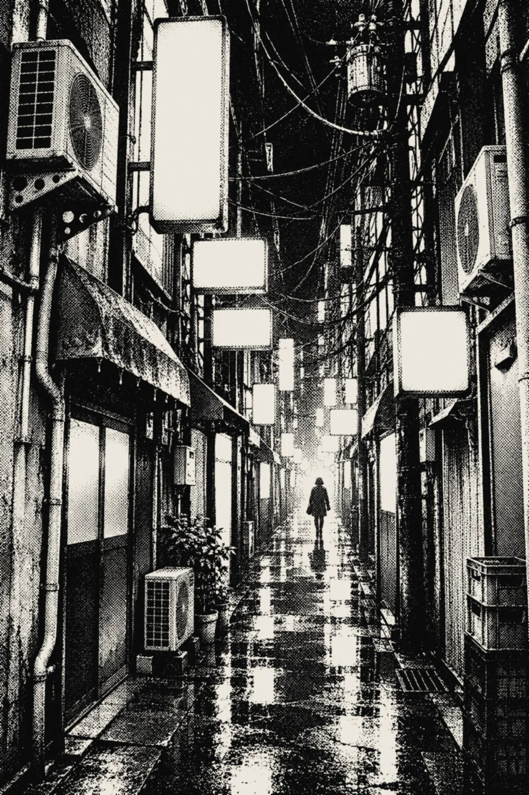

ENESCATALCA
開発者の記録DEVELOPER FILE · N°001
- Focus
- LLMs / Agents / Automation
- Base
- Python
- Status
- Building

AGENTSTHAT WORK.
I'm Enes. My focus now is large language models, AI agents and automation. My public projects so far are mostly computer vision; building in this new direction is what comes next.
NEXT次
Earlier
work
Five repositories, mostly computer vision.
Index 01 — 05.
- 01 YOLO object detection YOLOv3 on images, video and an Android camera, plus a custom YOLOv4 trained on 800 labelled images to spot Boston Dynamics' Spot.
- 02 Image Dataset Collector A Chrome and Brave extension that saves web images into your folder as sequentially numbered JPEGs.
- 03 FaceGuard Locks Windows when the webcam stops seeing you. Built on YuNet and SFace. A convenience lock, not access control.
- 04 OpenCV notes Worked examples from image basics to plate reading, vehicle counting and hand gestures. Written in Turkish.
- 05 MAL Tierlist Maker Turns a MyAnimeList profile into a tier list you can rearrange by dragging and export as PNG.
- 06 Next: an agentThe first project in the new direction. Reserved.
Open
source
GET INTOUCH
Open an issue on any repository, or find me on GitHub.
@EnesCatalca